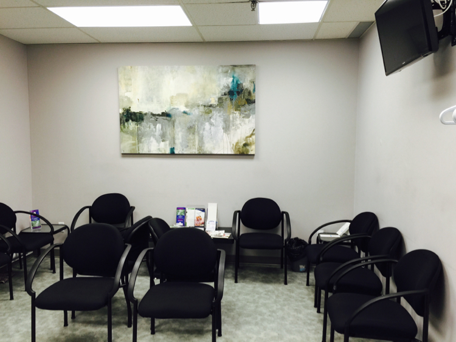

Patients & Visitors
--> We have a spacious waiting room for our patients and their accompanying guests.
--> We ask that if you bring young children please make sure they are supervised because of the fact that due to the small area and many rooms together we take privacy seriously.
For Ontario Residents:
Ensure that during your visit to see the respirologist and/or the technician for the Pulmonary Function Tests' that your bring your Ontario Health Card. All doctor appointments and tests are covered under OHIP. Visit the Ministry of Health and Long-Term Care for more information.
For Canadian Residents:
For out of province residents most services are covered however please check your province ministry for specific details.